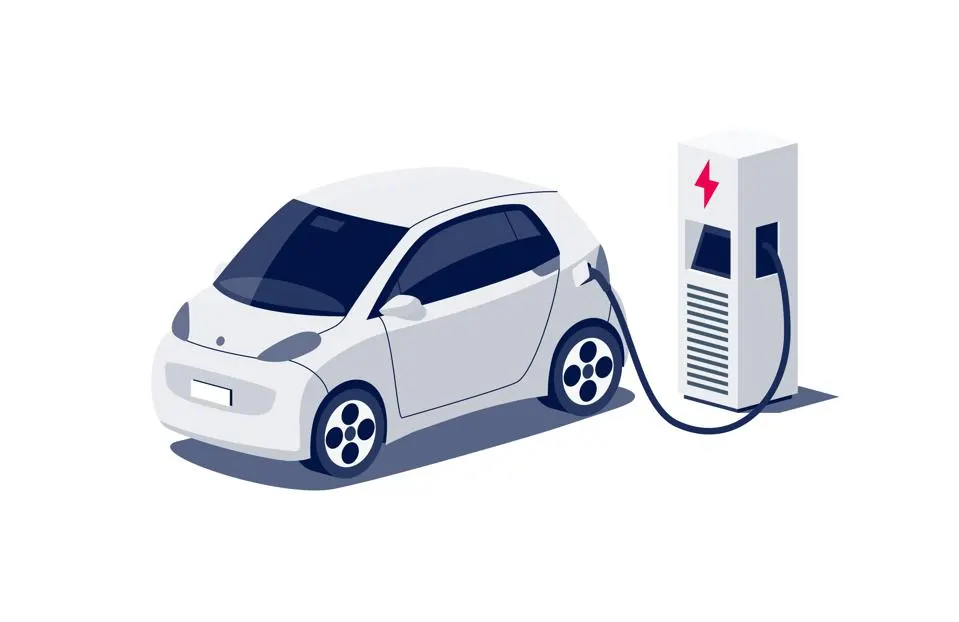

Developed an interactive Power BI dashboard to analyze coffee sales, delivering actionable insights on total sales, order quantities, and product performance across various categories, enabling informed, data-driven decision-making.
This project is focuses on analyzing the most valuable and in-demand skills for data analysts and provides insights into the trends, salary distributions, and optimal skills required to become a successful Data Analyst.
Built machine learning models to classify whether customers will accept a food coupon based on coupon type, price, and customer preferences while in a vehicle using algorithms such as logistic regression, SVM, neural networks, and Naive Bayes and compared its performance.
Investigated on global climate change, the direct and indirect factors responsible for this phenomenon, role of agriculture and food production sector in this change, and the future situation of our planet with the prevailing situation. This complete analysis is done using R and the insights are presented using R, R Shiny, Flourish, and Datawtrapper and hosted as a website.